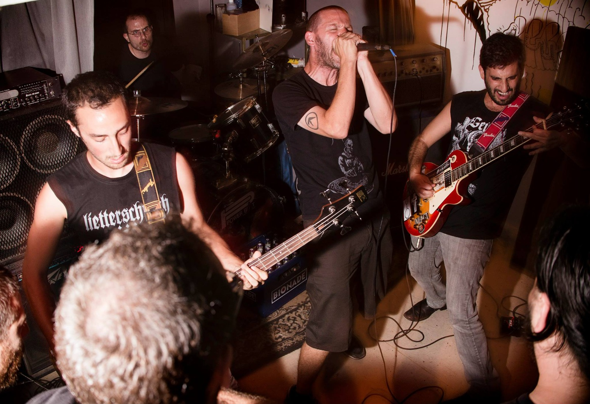
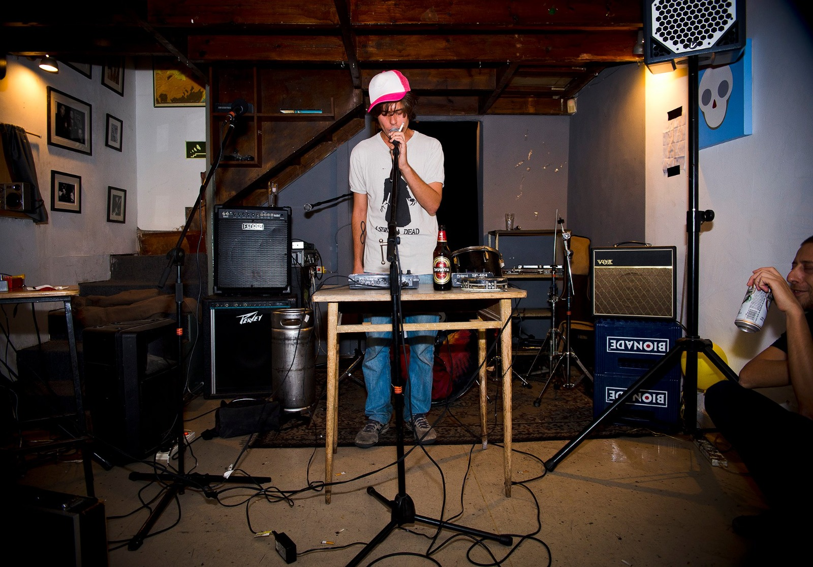
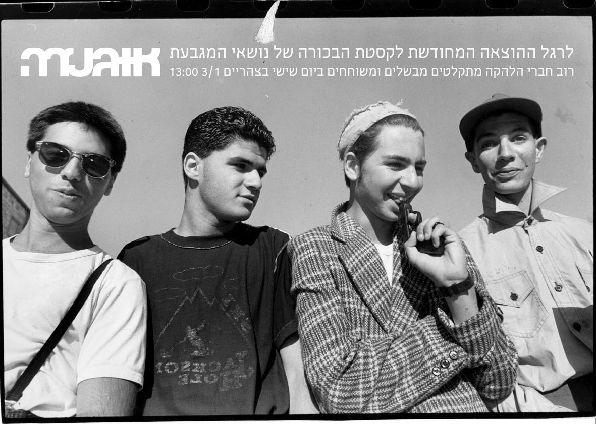

אוגנדה
מקום
אוגנדה נוסד ב־2005 על ידי איתמר וויינר ואורי קריסטל, שנפגשו כשלמדו במוסררה ב־2002, ועבדו בספריית הוידאו של האוזן השלישית בעמק רפאים. אחרי הלימודים הם חיפשו מקום שאפשר לבלות, להופיע ולתקלט בו, כשבנמצא היו מעט מאוד מקומות מתאימים וביניהם הרוזה. הרוזה היה "קצת הארדקור" מדי לחלק מהאנשים, והסט-אפ היה מאוד ספציפי וככל הנראה לא התאים לכל ההופעות. וויינר הקים באותה תקופה את הלייבל האלקטרוני אק דאק עם הראל שרייבר, ונוצר צורך גם במקום מתאים ללייבל ולדברים דומים.
וויינר וקריסטל דמיינו מקום שיוכל להיות גם חנות וגם בר, לפעול ביום וגם בלילה, למכור מוזיקה, תקליטים, קומיקס, ספרים. הם מצאו מקום ברחוב אריסטובולוס 4, בסמוך למקום ששימש רוב הזמן מועדון חשפנות ושאק דאק שכרו מדי פעם לעריכת מסיבות. בהמשך הם שכרו גם את החלל ליד, שהיה מחסן, כשראו שההופעות שקיימו בחנות מצליחות ויש להן ביקוש. הם חיברו את החללים עם דלת ויצרו מקום ייעודי להופעות. ההופעות הפכו לפעילות העיקרית באוגנדה כשלפעמים מספרן הגיע ל־40 הופעות בחודש. יורם אלייקים מפאקט רקורדס, שנסגרו זמן קצר לפני שאוגנדה נפתח, עזר לבנות את מערכת ההופעות.
אוגנדה נסגר ב־2015 וקיים כיום בתל אביב.
מוריס צרפתי
אחד הלקוחות הקבועים באוגנדה היה מוריס צרפתי, שהיה דמות מיתולוגית בירושלים. הוא היה חוקר במס הכנסה למחייתו שאהב מוזיקה והגיע באופן קבוע לחנות בית התקליט, שם עבד אביעד אלברט מהחזית האלקטרונית וטפט, והוא זכור לו כאחד הלקוחות הצבעוניים והנחמדים ביותר. הם התחברו ונהיו חברים טובים. הוא אהב מוזיקת אינדסטריאל, מוזיקת כסאח כלשונו.
צרפתי היה גם שחקן ומספר סיפורים. יורם מפאקט רקורדס הוציא דיסק של סיפורים שלו. צרפתי גם שיתף פעולה עם בני אורן מהלייבל מקלטתקליטים. הוא נהיה הזמר של להקת הפאנק סרטן השד לתקופה מסוימת, ושר עם אלון אבנת בקטע מהאוסף "קססה" שהוציאה החזית האלקטרונית. הוא הופיע בפסטיבל החזית שארגן גילי דה קיד עם "מוריס והאזבסטונים". לפני שנפטר הוציא את הקטע "אנא בלפונק" (אני פלאפונֶך) עם ישי אדר מנושאי המגבעת, שהיה גם בעל הדירה שלו. צרפתי נפטר ב-2018.
צרפתי היה גם שחקן ומספר סיפורים. יורם מפאקט רקורדס הוציא דיסק של סיפורים שלו. צרפתי גם שיתף פעולה עם בני אורן מהלייבל מקלטתקליטים. הוא נהיה הזמר של להקת הפאנק סרטן השד לתקופה מסוימת, ושר עם אלון אבנת בקטע מהאוסף "קססה" שהוציאה החזית האלקטרונית. הוא הופיע בפסטיבל החזית שארגן גילי דה קיד עם "מוריס והאזבסטונים". לפני שנפטר הוציא את הקטע "אנא בלפונק" (אני פלאפונֶך) עם ישי אדר מנושאי המגבעת, שהיה גם בעל הדירה שלו. צרפתי נפטר ב-2018.



פוסטר לאירוע באוגנדה לרגל הוצאה מחודשת לקסטה של נושאי המגבעת